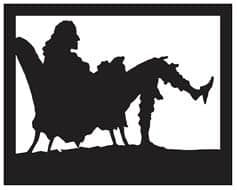

SEVGİLİ GÜNLÜK VE BİR DOSTA MEKTUPLAR
Karımla yatağa uzandım bugün, mutlu ve keyifli.
Samuel Pepys’in Günlüğü,
6 Temmuz 1662

Samuel Pepys
İş tamamen dürüst olmaya geldiğinde, pek az insan günlüklerinde olduğu kadar içtendir. Düşünceler, fikirler, arzular, sırlar, kısacası dünyaya ilan edilmeyen tüm detaylar bir günlüğün sayfalarında okunabilir. Eve yazılan mektuplar, özellikle de yurtdışından yazılmışsa, şaşırtıcı derecede açık olabilir. Belki mesafenin sağladığı güvenden, belki de seyahatin görgü kurallarının bağlayıcılığını azaltmasından.
‘İnsanı insan yapan aklıdır’
Bu motto Samuel Pepys’in günlüğünün başlangıcındaki iç kapak sayfasına Latince olarak yazılmıştır. İlk yazı 1 Ocak 1660 tarihlidir ve Pepys gündelik hayatını neredeyse on yıl boyunca yazıya dökmüştür. Başlangıçtan itibaren, kişisel hayatını ve görüşlerini ulusal ve siyasi olaylarla birarada ele almıştır. Restorasyon dönemine dair birinci elden, eşi benzeri olmayan bir tanıklık sunar: Kral II. Charles’in karakterine dair ipuçları verir. İngiltere-Hollanda Savaşı, 1665’teki büyük vebanın yarattığı yıkım ve 1666’daki Londra yangını gibi önemli olayları anlatır. Günlüklerinin editörü olan Robert Latham’ın da belirttiği gibi:
Sevecenlikle yazılmışlardır. Pepys için önemli olan
her zaman insandır, edebi etki yaratmak değil.
Bazı pasajlarını Fransızca ya da başka dillerde ve stenoyla yazdığı günlüklerden kralın metreslerine dair ayrıntılar öğreniriz. Başlangıçtan beri oradadır ve gözlem yapmaktadır. 13 Temmuz 1660’da şöyle yazmıştır: “Kral ve Dükler Madam Palmer’la birlikteydiler (Barbara Villiers, daha sonra Lady Castlemaine); Palmer, kocasını boynuzlamasından pek hoşlandıkları güzel bir kadın.” Kraliyet düğünü günü gelip de bağrı yanık Barbara Villiers çamaşırlarını dışarı astığında, Pepys şöyle bir not düşer: “Privy Garden’de Lady Castlemaine’nin nadide gecelikleri ve ipek jüponları görülebiliyordu. Cömertçe dantelle donatılmışlardı; onlara bakmak bana iyi geldi.”
Pepys aynı zamanda Nell Gwyn’i Kral Charles’ten daha önce görmüştür: Turuncu saçlı kızlar her zaman dikkatini çekerdi ve Nell’in sahnedeki komedi performansından çok etkilenmişti. 1667’de şöyle yazar: “...güzel Nelly’yi Drury Lane’de evinin kapısında büzgülü gömlek kolları ve korsesiyle birine bakarken gördüm, muazzam bir yaratıktı.”
Pepys sarayda olup bitenler karşısında çoğunlukla dehşete düşse de, kralın serüvenlerini sanki kendi yaşıyormuşçasına takip etti. Charles’in ihtiyatsızlığını ve devlet işlerinden çok sevgilileriyle meşgul olmasını pek tasvip etmezdi. Düzenli bir yönetici ve açıkgöz bir işadamı olan Pepys, pek çok defa toplantıya geldiğinde kağıt olmadığını, çünkü kırtasiye faturasının ödenmediğini öğrenince küplere binerdi.
Pepys kendi başarısızlıklarını ve karşılıksız hırslarını alaya alır ve kendisinden bahsederken bir dostla konuşurmuşçasına dürüsttür. Londra’nın genelevleri uğrak yeridir; yanında şarap, karides ve ıstakoz götürerek ziyaret ettiği Betty Lane adında bir metresi vardır. Bu onu başkalarının peşinde koşmaktan alıkoymamış, özellikle de Mary Mercer adlı hizmetçisine karşı şehvetli duygular beslemiştir. 18 Nisan 1666’da siyah Nan’ı tekrar tekrar “selamladıktan” sonra (‘bu bana muazzam bir keyif veriyordu’) eve gider, fakat mest olmuş bir halde Mercer’in göğüslerini ellemeden uykuya dalmazdı. Daha sonra kadının göğüslerini şöyle anlatacaktır: “Hayatımda gördüğüm en harika göğüsler, işin aslı bu işte.”
Tüm bu ekstra faaliyetlerinin yanı sıra Pepys, 1655’te evlendiği eşi Elizabeth’e içten bir ilgi duyar. Onunla birlikte olmaktan hoşlanır ve ayrı kaldıklarında onu özler. Karısını 1669’da tifo ateşinden kaynaklanan ani bir ölümle kaybedince işten dört haftalık izin alması, işine çok düşkün olan Pepys’in hislerinin bir göstergesidir. Bu dönemde birlikte çalıştığı siyasetçiler ve gemi kaptanlarından yazışmaları takip edemediği ya da kurul toplantılarına yeterince katılamadığı için özür dilemiştir.
İnce zekalı ve açık görüşlü bir parlementer olan Sör Charles Sedley’in maskaralıklarını da Pepys’ten öğreniriz. Sedley, “Merry Gang” (neşeli çete) olarak bilinen, Rochester Kontu ve Buckhurst Lordu’nun da dahil olduğu saray mensupları arasındadır. 1 Temmuz 1663 tarihinde Pepys defterine Bow Sokağı’ndaki Kate’s Cock Inn Tavern’de geçen bir olayı konuştukları bir akşam yemeğini kaydeder. Sedley, güpegündüz balkona çıkmış ve
...çıplak bedenini gösterip, akla gelebilecek her
türlü şehvet ve oğlancılık gösterisini yapmış;
böylece kutsal kitaba hakaret etmiş. Daha
sonra “şehirdeki tüm kaltakların peşinden
koşturacak” bir iksir yapıp satabileceğini
iddia etmiş. Aşağıda gösteriyi izleyen bir
kalabalık toplanınca Sedley “bir kadeh şarap
alıp cinsel organını içine sokmuş, sonra şarabı
içmiş, sonra bir kadeh daha doldurup kralın
sağlığına içmiş.”
Sedley bu yaramazlığı yüzünden tutuklanıp sıkı bir azar yer: “Yargıçlar ona verilebilecek en ağır kınamayı verir, Başyargıç da şöyle buyurur: O ve onun gibi ahlaktan yoksun zavallılar yüzündendir ki Tanrı’nın gazabı ve kıyameti üzerimize çöküyor.” Aynı zamanda 2000 Mark’la cezalandırılır. Kır evine gidip aklını başına toplaması için saraydan birkaç hafta uzaklaştırılsa da kariyeri zarar görmez. Hatta daha sonraları Avam Kamarası’na başkanlık edecektir.
Sedley, William of Orange ve Mary’nin sıkı bir destekçisiydi; nitekim Katolik Kral II. James’e 1688’in Glorious Revolution (Muhteşem Devrim)25 döneminde muhalefet etmişti. Kralın kızını baştan çıkarıp onu Dorchester Kontesi yaptığını işittiğinde ise şu ünlü yorumda bulunmuştur: “Kral kızımı kontes yaptıysa, gönül borcumu ödemek için yapabileceğimin en azı, majestenin kızının (Mary’nin) kraliçe olmasına katkıda bulunmak olacaktır.”
‘Her Johnson’a Bir Boswell Gerek’
James Boswell 1740’ta Edinburgh’da doğmuş bir avukat ve yazardı. Samuel Johnson biyografisiyle ve titizlikle tuttuğu günlükleriyle ünlüdür. Sıkı dostu Johnson’un aksine Boswell yaşamayı bilen biriydi ve Londra’nın façası bozuk yeraltı dünyasına meraklıydı.
19 Kasım 1762 Cuma günü hava buz gibiydi, fakat bu Boswell’in tadını kaçırmadı:
Highgate Hill’e gelip Londra’ya baktığımızda
her yanımız yaşam ve hazla çevriliydi.
Çeşit çeşit şarkılar söyledim,
tatlı bir kızla tutkulu bir buluşmayı anlatan
bir şarkı uydurmaya koyuldum, ortaya şu çıktı:
Ben ona bunu verdim, o bana onu verdi,
Al gülüm, ver gülüm değil de nedir bunun ismi?
1762-63 arasında tuttuğu Londra Günlüğü’nde şehrin “her türden, açık yürekli hanımlarla” dolu olduğunu ve “müthiş bir madam”ın geceliğinin elli gine ettiğini yazıyordu. Skalanın diğer ucunda sokakta çalışan fahişeler vardı; “sahilde sürten, orta malı olmuş beyaz çoraplı bir peri kızı” “bir şilin ve biraz şarap karşılığında çekici varlığını size teslim ederdi”. O zamanlarda bir şilin, Londra’nın yoksul bölgelerinde bodrum katında ya da tavanarasındaki bir odanın haftalık kirasına denkti. 25 Mart 1763’te Boswell şöyle yazar:
O akşam eve giderken şehevi duyguların
bedenimi sardığını hissettim ve bu hisleri
doyurmaya karar verdim. St James Parkı’na
gittim ve bir fahişe seçtim. İlk defa bir zırhla
[bir kondomla] ilişkiye girdim, fakat ancak
sönük bir haz alabildim. Elizabeth Parker
adında bir Shopshire genç kızıydı kendini
ihtiraslı kucağıma teslim eden, henüz 17
yaşında, pek güzel görünüşlü. Zavallıcık, pek
üzgün görünüyordu!
Birkaç gün sonra, 31 Mart’taki tecrübesinden daha az tatmin olmuş gibidir:
Gece parka gittim ve karşıma çıkan ilk fahişeyi
aldım. Pek konuşmadan, tehlikesiz ilişkiye girdim
onunla, korumaya alarak kendimi. Çirkindi, cılızdı,
nefesi içki kokuyordu. Adını sormadım bile.
İş bitince sıvıştı hemen. Bu çirkin tecrübe yüzünden
aşağılık hissettim kendimi ve bunu bir daha
yapmamaya karar verdim.
Öyle görünüyor ki utancını yener ve 17 Mayıs’ta şöyle devam eder:
Böylece sokaklara vurdum kendimi ve tam
da kendi sokağımın sonunda, Alice Gibbs
adında gencecik, tatlı bir kız buldum. Gizli bir
merdiven altına gittik, zırhımı çıkardığımda
takmamam için yalvardı: İş onsuz çok daha
zevkliydi, o da oldukça güvenilir biriydi. Öyle
sabırsızdım ki ona güvendim ve çok hoş bir
münasebetimiz oldu.
Sonraki gün, Boswell önceki günün ihtiyatsızlığı nedeniyle endişelidir:
Tekrar sefil bir duruma düştüğüm için -hem
de aptalca bir biçimde- pek kaygılıydım.
İyi niyetim zavallı kıza güvenmeme sebep
olmuştu, fakat sonra mantığım olanca
soğukkanlılığıyla şöyle dedi: “Bu kızlar
terk edilmiş, hilekar zavallılardır... Hem
dürüstlüğüne güvensen bile, kız sağlıklı
olduğundan nasıl emin olabilir?”
Kondom yeni bir icat değildi; Romalılar deriden, Mısırlılar da ipekten kondomlar kullanıyorlardı. Fakat 1665’te ‘Albay Kondomu’ olarak adlandırılan, temizlenmiş hayvan bağırsağından yapılan kondomlar piyasaya çıktı. Yumuşatılmaları için önce suya batırılmaları gerekiyordu ve kullanımdan sonra yıkanarak tekrar kullanılabilir hale getiriliyorlardı. Kondomu bağlamak için bir kurdele kullanılıyordu. Bu kondomlar hamileliği önlemekten çok zührevi hastalıklardan korunmak için yaygın olarak kullanılmaya başlandı. Genelde korumayı sağlayan, hazırlıklı müşteriler olurdu; sokakta müşteri bekleyen fahişeler yanlarında nadiren kondom bulundururlardı.
Boswell hastalık korkusunu çabucak unutur ve Shakespeare’s Head in Covent Garden’de iki güzel kızla daha tatlı dakikalar geçirir:
Hayvani heveslerin kabarmasıyla, arzular
içinde yanarak kendimi Piazzas’a attım (...)
ve varlığım onlarla teselli buldu; önce büyük
olanda, sonra küçüğünde. Kelimenin tam
anlamıyla kendime gelmiştim.
Eve dönerken ‘ruhuna renk gelmiştir’. Boswell bu macerayı, bir taverna odasında gerçekleştiğinden, sokaklardaki gibi ‘alçak bir sefahat’ değil de ‘yüksek bir sefahat’ olarak tanımlar. Ne yazık ki, ister yüksek ister alçak olsun, maceraları sırasında belsoğukluğu kapmaktan kurtulamaz.
Bir başka sefer, Boswell eski uğrak yerlerinden birine gider. 25 Mart 1768’de günlüğüne şöyle yazar:
Daha sonra Covent Garden’a giderek bahçelerden
birinde daha önce Londra’da görmüş olduğum genç
bir hanımı aradım. Bulamadım onu, fakat Kitty
Brookes’la karşılaştım, genç yaşına yaraşır
canlılıkta güzel bir sevgili. Biraz ustalık gerekiyordu
ve layığıyla yerine getirdim görevimi. İşinde
bu kadar usta bir kızla daha önce hiç
karşılaşmamıştım. Cömertliğini sınamak için
ona yalnızca dört şilin verdim. Hiçbir memnuniyetsizlik
belirtisi göstermedi, gayet mutlu ve iyilikseverdi.
Boswell pek çok bakımdan zamanının ahlak anlayışını yansıtır. Fahişelerin davranışlarına yönelik tiksintisini sıklıkla belirtir, bu büyük ihtimalle kendine yönelik duygularının bir yansımasıdır. Bazen kendi zayıflığı ve yoldan sapma isteği karşısında dehşete düşer. Kamusal alanda sert cinsel ilişkiye yönelik, onu bazen heyecanlandıran bazen de ürküten bir arzu duyar; fakat asla seks endüstrisinin boyutlarına ya da hayatını sokaklarda kazanmak zorunda kalan kızların sayısına hayret etmez. Boswell masum bir kızı ayartma fikrine karşı çıkar, fakat vicdanını şu düşünceyle avutur: “Kadın zaten terk edilmişse, suçun ağırlığı hafifletilmelidir.”
Boswell, Sör Joshua Reynolds ve Samuel Johnson tarafından yeme-içme, edebi sohbetler ve tartışmalar için kurulan The Club’ın da üyelerinden biridir. Üyeler arasında David Garrick, Edmund Burke ve Oliver Goldsmith de vardır. 1764’ten itibaren toplantılar Soho’daki Gerrard Sokağı’nda, Turk’s Head Tavern’da yapılır. Burası, bölgede yaşayan ve çalışan kızlarla tanışmak için uygun bir başlangıç ya da bitiş noktasıdır.
Johnson’un görüşleri, biyografisinin yazarı ve dostu olan Boswell’den çok farklıdır. 1763 Temmuz’unda bir gece, sahil boyunca yürüyen ikilinin yanına bir kız yanaşır. Johnson kızı kibarca reddeder, sonra da Boswell’e uzun uzun bu kadınların zavallı hayatlarından bahsederek şu yargıda bulunur: “Cinsler arasındaki yasadışı ilişki, sonuçta, mutluluktan çok sefalet getirir”.
Ve Johnson, sözlerine uygun biçimde yaşar. Boswell, Johnson’ın Hayatı’nda dostunun Polly Carmichael adlı bir kadına nasıl yardım ettiğinden bahseder:
Bir gece geç saatlerde eve dönerken sokakta
yatan bir kadın bulmuş; kadın öyle bitkindi ki
yürüyecek hali yokmuş. Onu sırtına alıp eve
götürdüğünde kadının ahlaksızlık, yoksulluk
ve salgın hastalığı en ağır biçimde yaşayan
o düşkün kadınlardan biri olduğunu öğrenmiş.
Kadını azarlamak yerine ona uzun süre, kadın
sağlığına kavuşuncaya kadar şefkatle, masraftan
kaçınmadan bakmış ve onu erdemli
bir hayat sürmeye teşvik etmiş.
Ancak işler pek de böyle gitmez. Johnson, daha sonraları arkadaşı Bayan Hester Thrale’e “Ondan iyi kurtulduk. Poll aptal bir sürtük,” diyecektir. 1777’de Johnson’un yanında yedi kişi kalmaktadır. Bayan Thrale hatıralarında Bolt Court’taki evi “tamamen yardım amaçlı kabul ettiği tuhaf yaratıklarla dolup taşan” bir yer olarak tasvir eder.
Boswell’e göre, eşi Tetty’nin 1752’deki ölümünden sonra Johnson yalnızlığı tercih etmiş, cinsel ilişkiden kaçınmıştır. Johnson “şehir kadınları”nı reddeder ve tensel zevklerle ilgilenmediğini söyler. Oyuncu David Garrick’e artık tiyatro kulislerine girmediğinden, çünkü “aktrislerin beyaz memeleri ve ipek çoraplarının cinsel organını hareketlendirdiğinden” bahseder.
25 Muhteşem Devrim: 1688’de Kral II. James’in tahttan indirilmesi. (e.n.)